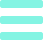

<!DOCTYPE html>
<html>
  <head>
    <meta charset="utf-8">
    <meta name="viewport" content="{{meta}}">

    <title></title>

    <link href="lib/ionic/css/ionic.css" rel="stylesheet">
    <link href="css/style.css" rel="stylesheet">
    <link href="lib/jr-crop/jr-crop.css" rel="stylesheet">
   
    <script src="http://ajax.googleapis.com/ajax/libs/jquery/1.11.2/jquery.js"></script>
    <!--<link href="http:////maxcdn.bootstrapcdn.com/bootstrap/3.3.1/css/bootstrap.min.css" rel="stylesheet" > -->
    <!-- IF using Sass (run gulp sass first), then uncomment below and remove the CSS includes above
    <link href="css/ionic.app.css" rel="stylesheet">
    -->
    <!-- ionic/angularjs js -->
    <script src="lib/ionic/js/ionic.bundle.js"></script>

    <script src="lib/ng-cordova.js"></script>
    <script src="cordova.js"></script>
    
    <script src="lib/videoplayer.js"></script>
    <script src="lib/facebookConnectPlugin.js"></script>
    <script src="lib/PushNotification.js"></script>


    <script src="lib/jr-crop/jr-crop.js"></script>
    <script src="lib/ng-videosharing-embed.min.js"></script>
    <script src="lib/jquery.rwdImageMaps.min.js" type="text/javascript"></script>
    <script src="lib/angular-rwdImageMaps.min.js" type="text/javascript"></script>
    <script>
      (function(d, s, id){
         var js, fjs = d.getElementsByTagName(s)[0];
         if (d.getElementById(id)) {return;}
         js = d.createElement(s); js.id = id;
         js.src = "//connect.facebook.net/en_US/sdk.js";
         fjs.parentNode.insertBefore(js, fjs);
       }(document, 'script', 'facebook-jssdk'));
    </script>

    <!-- your app's js -->
    <script src="js/app.js"></script>
    <script src="js/controllers.js"></script>
    <script src="js/services.js"></script>
    <script src="js/directive.js"></script>
  

  </head>
  <body ng-app="starter">
    <!--
      The nav bar that will be updated as we navigate between views.
    -->
    <!-- <ion-nav-bar class="bar bar-header bar-custom-head">
      <ion-nav-back-button>
      </ion-nav-back-button>
        <ion-nav-buttons side="right">
          <a href='#/tab/dash/misc' class="button button-icon button-clear">
            
          </a>
        </ion-nav-buttons>
        <ion-nav-buttons side="left">
          <a href='#/tab/dash/misc' class="button button-icon button-clear">
            
          </a>
        </ion-nav-buttons>
    </ion-nav-bar> -->
    <!--
      The views will be rendered in the <ion-nav-view> directive below
      Templates are in the /templates folder (but you could also
      have templates inline in this html file if you'd like).
    -->
    <ion-nav-view></ion-nav-view>


  </body>
</html>
